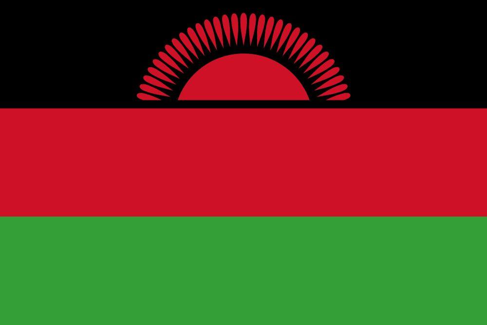

About Me
My name is Chervester Nyasulu, and I am 28 years old from Malawi. I have a strong passion for software development and enjoy learning new technologies. I love solving problems and building projects that can help make people's lives better. I am always looking to improve my coding skills and explore new tools and languages. My goal is to create meaningful solutions that can make a positive impact in the world.
Discover Malawi

Malawi, known as the "Warm Heart of Africa", is renowned for its stunning Lake Malawi, vibrant culture, and welcoming people. The country offers a rich blend of landscapes, from mountains to plains, and is home to unique wildlife and beautiful nature reserves.